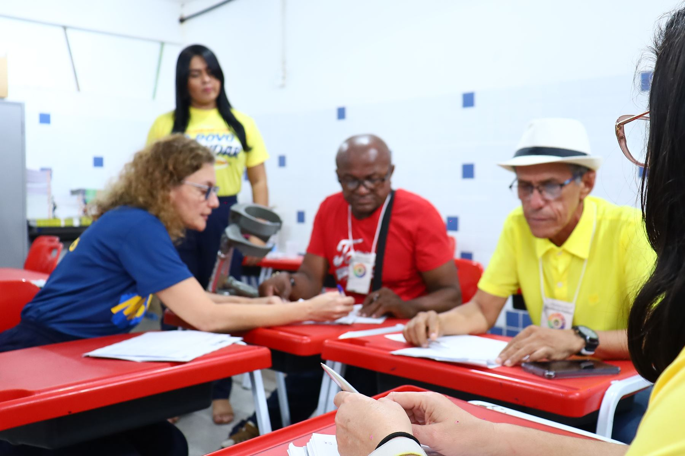
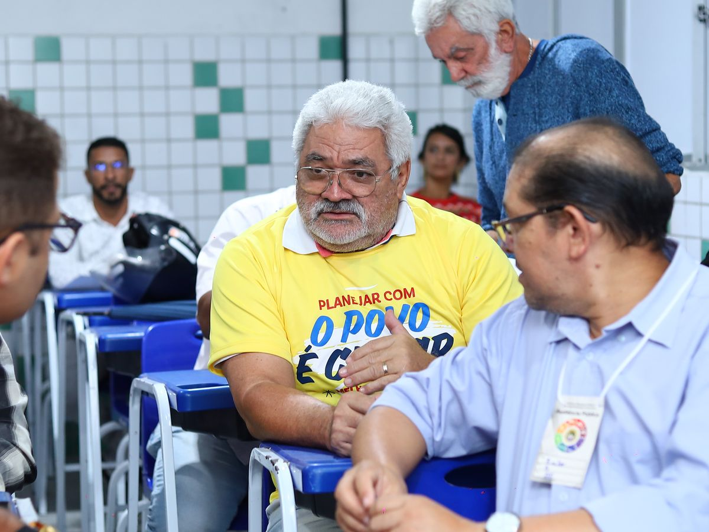

A Maceió que queremos começa com a sua participação.
Conheça as ações, indique o que é prioridade no seu bairro e acompanhe o orçamento da cidade. Tudo em um só lugar.
Da sua opinião ao orçamento da cidade
Você não precisa entender de orçamento. O Participa mostra as ações, você escolhe e depois acompanha o que foi feito com a sua indicação.
- 1Você
Faça sua inscrição
Cadastro gratuito, em que você informa a sua região (RA).
- 2Você
Conheça e priorize
Veja as ações de cada área e região e escolha as mais importantes. Se quiser, explique o porquê ou envie uma ideia.
- 3Prefeitura
Consolidação
A Prefeitura reúne tudo o que foi indicado e publica a ata da consulta.
- 4Prefeitura
Proposta de orçamento
As prioridades ajudam a montar a proposta de orçamento (PLOA), enviada à Câmara Municipal.
- 5Você
Acompanhe
Aprovado o orçamento, você acompanha a execução no Portal da Transparência.

Mais vozes. Mais Maceió.
Do Benedito Bentes à Ponta Verde, do Jacintinho a Ipioca, cada bairro tem as suas prioridades. A Prefeitura quer ouvir jovens e pessoas idosas, pessoas com deficiência, mães, trabalhadores e todo mundo que faz a cidade acontecer. Quanto mais gente participa, mais o orçamento se parece com Maceió.
Participar ficou mais fácil
- Alto contrasteToque em “Contraste”, no topo da página, para ler com mais conforto.
- Linguagem simplesTudo explicado sem termos técnicos. Ficou com dúvida? O OP MCZ explica.
- Pelo celularFunciona em qualquer celular, sem precisar baixar aplicativo.
- Ajuda presencialSem internet em casa? Procure o ponto de apoio mais perto de você.
O orçamento de Maceió também tem um olhar especial para quem mais precisa, com demonstrativos próprios para crianças e adolescentes, pessoas idosas e população em situação de rua. Veja no OP MCZ.
Quero dar minha opiniãoO que a cidade pediu
Qual é a sua região?
Maceió é dividida em 8 regiões administrativas (RA). Você escolhe a sua na inscrição. Na dúvida, toque numa RA para ver os bairros dela ou procure pelo nome do seu bairro.
Participe com informação
O que é o Participa Maceió?
É a plataforma de participação social da Prefeitura de Maceió. Por ela, a população conhece as ações do Município, apresenta contribuições e indica as prioridades da sua comunidade para o orçamento.
O que são PPA, LDO e PLOA?
São as três leis do planejamento. O PPA é o plano de quatro anos. A LDO define as metas e as regras de cada ano. O PLOA é a proposta de orçamento do ano seguinte, enviada à Câmara Municipal.
Como as prioridades indicadas são usadas?
As indicações são reunidas e analisadas por critérios como o planejamento municipal, a competência do Município, o custo, a região e a capacidade de execução. O resultado ajuda a montar a proposta de orçamento.
Quem pode participar?
Qualquer pessoa, com um cadastro gratuito na plataforma durante a consulta pública.
Onde acompanho como o dinheiro é gasto?
No Portal da Transparência da Prefeitura, que mostra durante o ano quanto já foi empenhado, liquidado e pago.
A Maceió que queremos começa com a sua participação.
Cada indicação ajuda a definir onde o orçamento da cidade vai chegar.